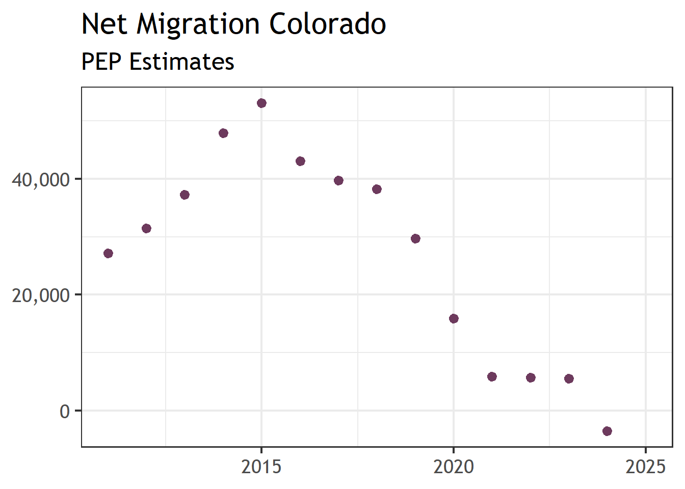
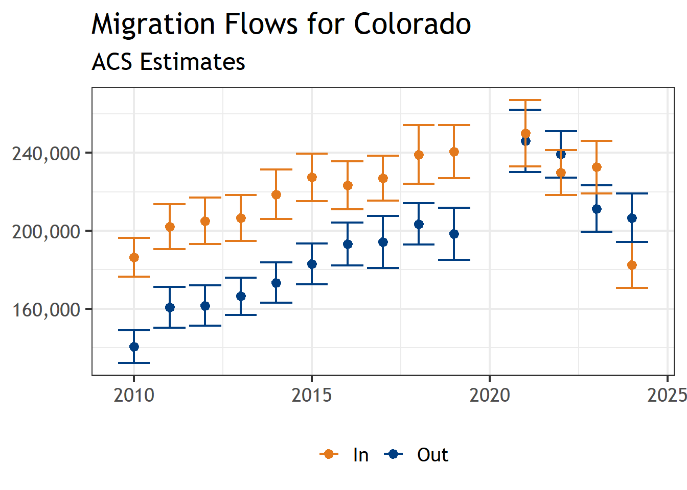
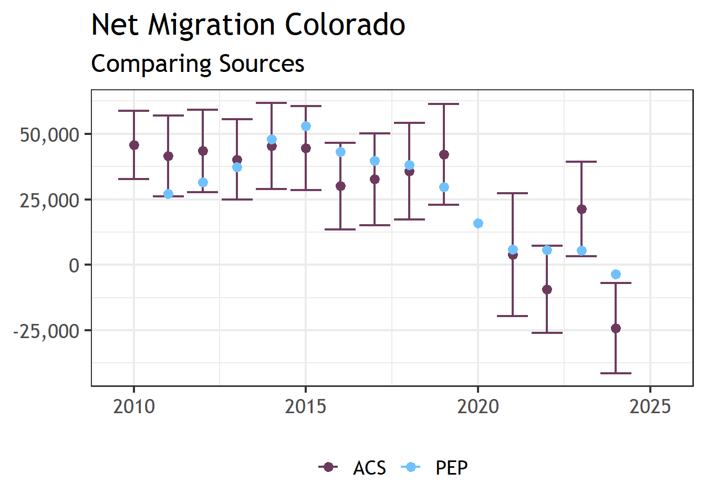

library(tidyverse)
library(readxl)
library(sdodemog)
library(tidycensus)
library(scales)
# latest pep vintage we can use for this project
PEP_VINTAGE <- 2025ACS State to State Flows
What to Take Away
Colorado Narratives
Domestic net migration was much higher in the 2010’s than in the 2020’s
Domestic migration flows, however, peaked in 2021
Both domestic in- and out-migration flows have been falling since 2021
Domestic in-migration is falling faster than domestic out-migration
Data Details
ACS and PEP data are largely in agreement with one another
PEP offers more granular trends for net migration
ACS allows for studies of migration flows
Into the Weeds: ACS and PEP
The US Census Bureau (USCB) is by far the largest producer of data related to migration in the United States. What they produce, however, can be confusing and sometimes contradictory. In this document we are going to review two of the primary sources of data pertaining to high level migration trends from the USCB, the Population Estimates Program (PEP) and the American Community Survey (ACS). In particular we are going to review two aspects of migration which can be viewed from these data sources net migration and migration flows.
Net Migration & Migration Flows
Net Migration and migration flows are related but distinct concepts — one is a summary statistic, the other is directional movement data.
Net Migration
[Net migration](https://www.census.gov/newsroom/blogs/random-samplings/2017/10/net_migration_andpo.html) is the difference between the number of people moving into an area and the number of people moving out. It is a single net figure — positive when more people arrive than leave, and negative when more people depart than arrive.
Net migration can be further divided into domestic migration (moves where both the origin and destination are within the United States, excluding Puerto Rico) and international migration (any change of residence across the borders of the United States).
Migration Flows
[Migration flows](https://www.census.gov/data/developers/data-sets/acs-migration-flows.html), by contrast, capture the actual directional movements between places — who went where, and how many. Migration flows are derived from household and group quarter locations sampled in the American Community Survey (ACS) and responses to the migration questions on the questionnaire. They are period estimates that measure where people lived when surveyed (current residence) and where they lived one year prior. The Census Bureau produces these flows at multiple geographic scales. [State-to-state](https://www.census.gov/data/tables/time-series/demo/geographic-mobility/state-to-state-migration.html) migration flows are created from tabulations of the state of current residence crossed by state of residence one year ago.
pep_est_df <- "https://www2.census.gov/programs-surveys/popest/datasets/" %>%
str_c("2010-2020/state/totals/nst-est2020-alldata.csv") %>%
read_csv() %>%
filter(NAME == "Colorado") %>%
pivot_longer(CENSUS2010POP:RNETMIG2020) %>%
filter(str_starts(name, "DOMESTIC")) %>%
mutate(year = as.numeric(str_sub(name, -4, -1))) %>%
select(year, value) %>%
filter(year != 2010) %>%
bind_rows(
get_estimates(
"state", product = "components", vintage = 2025, time_series = TRUE
) %>%
filter(NAME == "Colorado") %>%
filter(variable == "DOMESTICMIG") %>%
select(year, value) %>%
filter(year != 2020)
) %>%
# value corresponds to calendar year
mutate(estimate = (lead(value) + value)/2) %>%
select(year, estimate) %>%
mutate(source = "PEP")
pep_est_df %>%
ggplot(aes(
x = year, y = estimate, color = source)) +
geom_point(color = "#6D3A5D") +
labs(x = NULL, y = NULL, color = NULL) +
theme_sdo(base_size = 18) +
scale_y_continuous(labels = comma) +
theme(legend.position = "bottom") +
ggtitle("Net Migration Colorado", "PEP Estimates")
## these are the prep functions for pulling in ACS data
# function for going from state abbreviations to full names
translate_state_name <- function(x){
v1 <- c(
state.name, "District of Columbia", "Puerto Rico", "U.S. Island Areas")
names(v1) <- c(state.abb, "DC", "PR", "USISLAND")
if_else(is.na(v1[x]), x, v1[x])
}
# what are the state to state files we have available to us?
s2s_acs_raw_files <- "./data/s2s/" %>%
list.files(full.names = TRUE)
# assign them a name based on their associated year
names(s2s_acs_raw_files) <- str_sub(
str_split_fixed(s2s_acs_raw_files, ".xl", 2)[,1], -4, -1)
# the state to state migration files are ugly so its easier for us to
# put together the names in manually. These are the vectors of the
# sheet names for different files.
arr_state_names <- str_replace(sort(c(state.abb, "DoC")), "DoC", "DC")
data_col_names <- c(
"state",
"popover1",
"popover1_moe",
"samehouse",
"samehouse_moe",
"samestate",
"samestate_moe",
"diffstatetot",
"diffstatetot_moe",
str_c(rep(arr_state_names, each = 2), rep(c("", "_moe"), times = 51)),
"abroad",
"abroad_moe",
"PR",
"PR_moe",
"USISLAND",
"USISLAND_moe",
"foreign",
"foreign_moe"
)
data_col_names_2024_1 <- c("state", "var", "estimate", "moe")
data_col_names_2024_2 <- c(
"state",
"popover1",
"popover1_moe",
"samehouse",
"samehouse_moe",
"samestate",
"samestate_moe",
"diffstatetot",
"diffstatetot_moe",
"abroad",
"abroad_moe")
data_col_names_2024_3 <- c(
"var",
"popover1",
"popover1_moe",
"samehouse",
"samehouse_moe",
"samestate",
"samestate_moe",
"diffstatetot",
"diffstatetot_moe")
# read in and harmonize all the acs data across years
harmonize_mig_df <- bind_rows(lapply(names(s2s_acs_raw_files), function(y){
y_ <- as.numeric(y)
# we have not yet developed the code to read in data from pre-2010 acs
if(y_ < 2010){
return(tibble())
}else if(y_ >= 2024){
raw1_df <- read_excel(s2s_acs_raw_files[y], skip = 7, sheet = 1)
names(raw1_df) <- data_col_names_2024_1
raw2_df <- read_excel(s2s_acs_raw_files[y], skip = 7, sheet = 2)
names(raw2_df) <- data_col_names_2024_2
raw3_df <- read_excel(s2s_acs_raw_files[y], skip = 7, sheet = 3)
names(raw3_df) <- data_col_names_2024_3
mod3_df <- raw3_df %>%
mutate(state = "United States") %>%
select(
state, var, estimate = diffstatetot, moe = diffstatetot_moe)
mod2_df <- raw2_df %>%
mutate(state = if_else(
str_starts(state, "Unite"), "United States", state)) %>%
filter(!is.na(popover1)) %>%
pivot_longer(samehouse:abroad_moe) %>%
mutate(var = str_split_fixed(name, "_", 2)[,1]) %>%
mutate(type = str_split_fixed(name, "_", 2)[,2]) %>%
mutate(type = if_else(type == "", "estimate", type)) %>%
mutate(var = translate_state_name(var)) %>%
select(-name) %>%
pivot_wider(names_from = type, values_from = value) %>%
mutate(state = if_else(
str_starts(state, "Unite"), "United States", state))
mod1_df <- raw1_df %>%
mutate(estimate = as.numeric(estimate)) %>%
mutate(moe = as.numeric(moe))
out_df <- bind_rows(
mod2_df,
mod1_df %>%
left_join(distinct(mod2_df, state, popover1, popover1_moe)),
mod3_df %>%
left_join(distinct(mod2_df, state, popover1, popover1_moe))) %>%
mutate(year = y_)
return(out_df)
}
raw_df <- read_excel(s2s_acs_raw_files[y], skip = 7)
keep_cols <- which(
str_starts(names(raw_df), "Estimate|MOE") | names(raw_df) == "...1")
sub_col_df <- raw_df[keep_cols]
names(sub_col_df) <- data_col_names
sub_col_df %>%
mutate(across(popover1:foreign_moe, as.numeric)) %>%
filter(!is.na(popover1)) %>%
pivot_longer(samehouse:foreign_moe) %>%
mutate(var = str_split_fixed(name, "_", 2)[,1]) %>%
mutate(type = str_split_fixed(name, "_", 2)[,2]) %>%
mutate(type = if_else(type == "", "estimate", type)) %>%
mutate(var = translate_state_name(var)) %>%
select(-name) %>%
pivot_wider(names_from = type, values_from = value) %>%
mutate(state = if_else(
str_starts(state, "Unite"), "United States", state)) %>%
mutate(year = y_)
}))harmonize_mig_df %>%
filter(
(state == "United States" & var == "Colorado") |
(state == "Colorado" & var == "diffstatetot")) %>%
mutate(lwr = estimate - moe, upr = estimate + moe) %>%
mutate(type = if_else(var == "Colorado", "Out", "In")) %>%
ggplot(aes(x = year, y = estimate, ymin = lwr, ymax = upr, color = type)) +
geom_point() +
geom_errorbar() +
labs(x = NULL, y = NULL, color = NULL) +
theme_sdo(base_size = 18) +
scale_y_continuous(labels = comma) +
theme(legend.position = "bottom") +
ggtitle("Migration Flows for Colorado", "ACS Estimates") +
scale_color_sdo_discrete(primary = "navy", other = "orange")
acs_est_df <- harmonize_mig_df %>%
filter(
(state == "United States" & var == "Colorado") |
(state == "Colorado" & var == "diffstatetot")) %>%
mutate(type = if_else(var == "Colorado", "Out", "In")) %>%
arrange(year, type) %>%
group_by(year) %>%
summarise(
estimate = first(estimate) - last(estimate),
moe = sum_moe(moe)
) %>%
mutate(lwr = estimate - moe, upr = estimate + moe) %>%
mutate(source = "ACS")
acs_est_df %>%
bind_rows(
pep_est_df
) %>%
ggplot(aes(
x = year, y = estimate, ymin = lwr, ymax = upr, color = source)) +
geom_errorbar() +
geom_point() +
labs(x = NULL, y = NULL, color = NULL) +
theme_sdo(base_size = 18) +
scale_y_continuous(labels = comma) +
theme(legend.position = "bottom") +
ggtitle("Net Migration Colorado", "Comparing Sources") +
scale_color_sdo_discrete(primary = "lightblue", other = "purple")